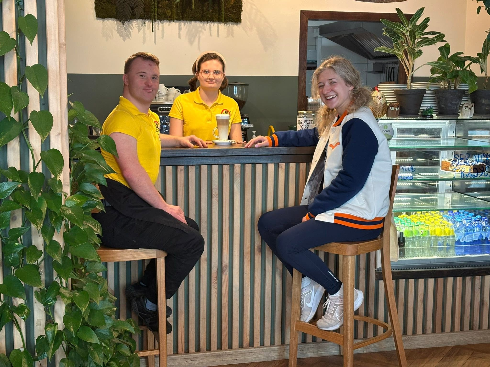
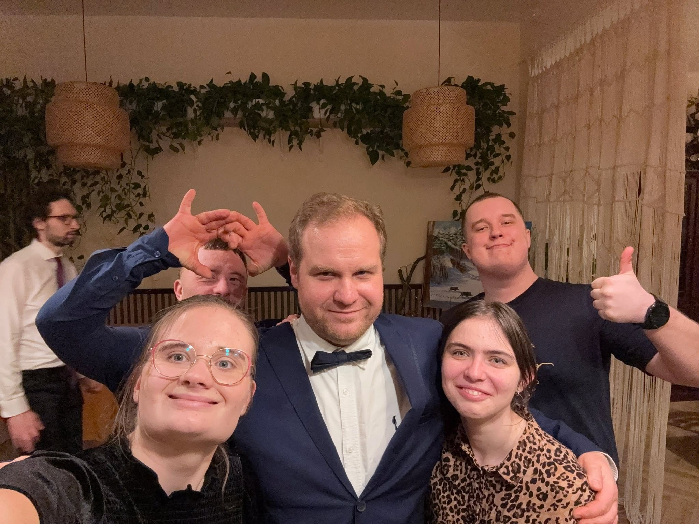
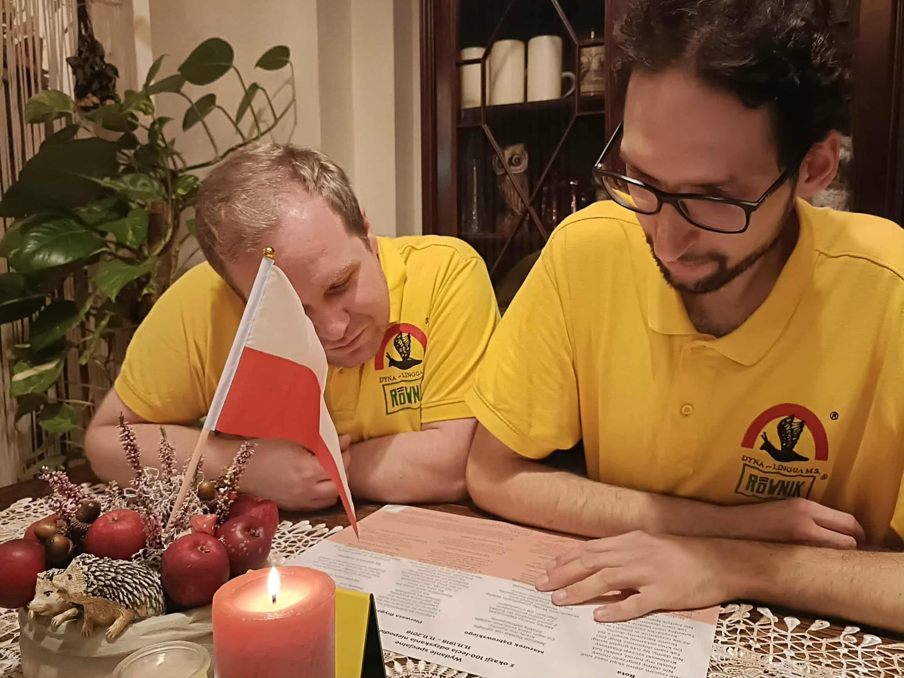

Przestrzeń, w której
kawa znaczy więcej.
Wyjątkowa klubokawiarnia , którą prowadzi Stowarzyszenie Twórców i Zwolenników Psychostymulacji. Miejsce pełne szczerości, równego traktowania i rzemieślniczego smaku.



Więcej niż gastronomia. Prawdziwa równość.
W Cafe Równik całkowicie przełamujemy bariery. Nasz wyjątkowy zespół tworzą osoby z niepełnosprawnością intelektualną, które pod okiem doświadczonych terapeutów rozwijają swoje pasje kulinarne i społeczne.
Każda zamówiona kawa czy domowy obiad to realne wsparcie procesu aktywizacji zawodowej i społecznej. Tutaj spotykamy się bez oceniania — po prostu jak równy z równym.
„To, co trafia na Twój stół, to owoc szczerej, zaangażowanej pracy i wielkiego serca.”
Rok, w którym rozpoczęliśmy naszą wspólną drogę.
Wspaniałych specjalistów dbających o najwyższą jakość.
Serca i naturalnych składników w każdym przepisie.
Zapraszamy codziennie
Znajdziesz nas w samym sercu wrocławskiego Nadodrza. Odwiedź nas na pyszne śniadanie lub popołudniową kawę.
„Idealny przystanek podczas spaceru szlakiem słynnych, artystycznych podwórek przy ul. Roosevelta.”
Odwiedź nas lub zarezerwuj stolik
Jeśli planujesz nas odwiedzić w większym gronie, zachęcamy do wcześniejszego kontaktu telefonicznego.
Adres
ul. Jedności Narodowej 47, 50-260 Wrocław